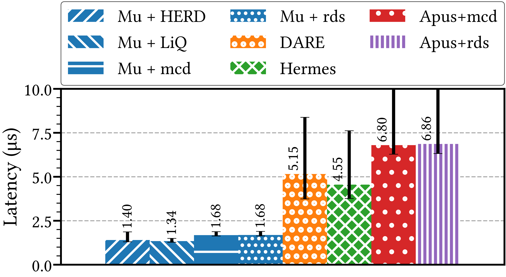
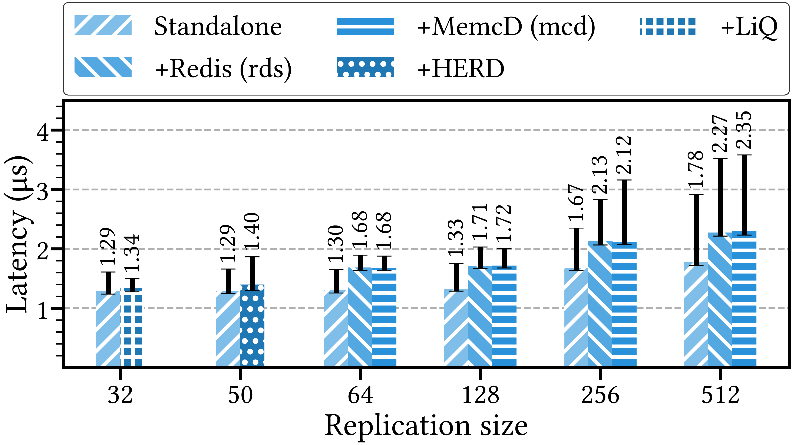
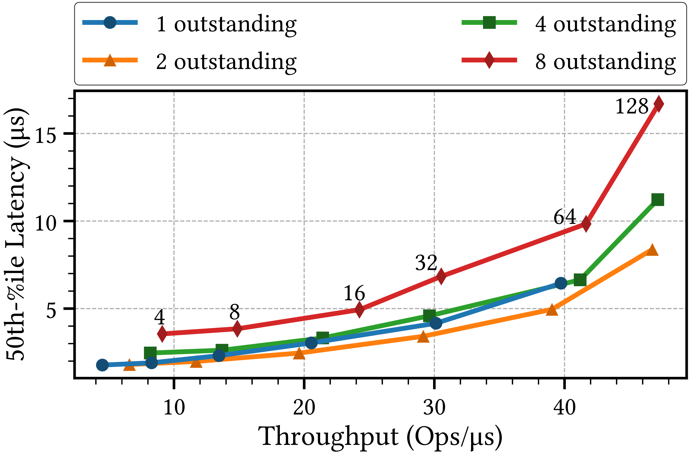

The Problem
Modern applications do useful work in microseconds, but fault tolerance adds orders of magnitude more.
You can't just shave cycles — you need a fundamentally different lever.
Where Microseconds Matter
- Financial trading — microseconds = money. Replication delay is a direct competitive disadvantage.
- Embedded control — microseconds = safety. Real-time loops demand ultra-low-latency replication.
- Microservices — latency compounds across large service graphs. Stateful components (KV stores) sit on critical paths.
State Machine Replication (SMR)
- Each replica keeps a copy of the application + a log of requests
- Leader orders requests, replicates to a majority, replicas apply in order
- Majority intersection → no two different values both "committed" for the same slot
- Provides linearizability: the service behaves as one copy
RDMA: The Lever
- One-sided operations (Write, Read) bypass the remote CPU entirely
- Memory Region (MR) — registered user memory with configurable access flags
- Queue Pair (QP) — endpoint with state machine (RESET → INIT → RTR → RTS) and access flags
- Reliable Connection (RC) — reliable, in-order delivery between QP pairs
Mu's Two Core Ideas
① Silent Followers
Leader replicates via one-sided RDMA writes into follower logs. Followers do zero network communication on the fast path.
② Permission = Safety
RDMA write permissions as split-brain prevention. Each replica grants write access to exactly one leader at a time.
Two-Plane Architecture

Replication plane (fast path, one-sided RDMA writes) and Background plane (elections, permissions, catch-up) run on separate threads, QPs, and MRs.
The Background Plane
While the replication plane is optimized for speed, the background plane handles everything else — on separate threads, QPs, and MRs for isolation.
Responsibilities
- Failure detection — pull-score heartbeat monitoring via RDMA reads
- Leader election — deterministic rule: lowest-ID replica considered alive
- Permission management — revoke/grant RDMA write access during leader transitions
- Catch-up & recovery — synchronize lagging or recovering replicas
Why Separate?
- Background work must never block the fast-path replication thread
- Separate QPs prevent control-plane RDMA ops from queuing behind data-plane writes
- Separate MRs prevent permission changes on the background region from disrupting replication MR access
The Fast Path
- Client request intercepted by capture shim at the leader
- Leader appends to its local log
- Leader RDMA-writes entry to each follower's log
- Majority replicated → execute, respond, and inject into replicas for replay

Replication in Action
Per-Replica Data Structures

- Log: registered memory (MR), writable only by current leader via RDMA
- FUO (First Undecided Offset): lowest undecided index
- Per-slot: (proposal number, value) tuple
- Canary byte: at end of each entry, non-zero when written
Making It Actually Correct
- Canary byte — leader sets non-zero when writing; follower checks before trusting. Prevents reading half-written RDMA entries.
- Commit piggybacking — the next write serves as commit signal for the previous slot. No explicit "chosen" message needed.
- Log recycling — circular log reuses entries once all replicas have applied them
- Prepare omission — if only empty slots seen on confirmed followers, skip the prepare phase entirely. Common-case cost → just one-sided RDMA writes.
Why Concurrent Leaders Are Dangerous
Classic Approach
- Extra message rounds
- Follower promises ("won't accept lower proposals")
- Each round = more μs on the critical path
Mu's Approach
- Make unauthorized writes physically impossible
- Not "followers promise" but "the NIC rejects the write"
- Safety via hardware access control
Permission-Based Safety
The Invariant
- Each replica grants RDMA write permission on its log to exactly one leader at a time
- Hardware enforced: unauthorized RDMA writes silently fail at the NIC
- Not "followers promise" — the NIC rejects the write
How Permissions Change
- Would-be leader writes a permission request into the target replica's background-plane MR (one-sided RDMA)
- Log owner: revokes from current holder, grants to requester
- Multiple requesters processed one by one, ordered by replica ID
- Only after revoke+grant → replica joins
confirmedFollowers
Key Properties
- Each replica has a permission request array in its background-plane MR
- Processing order by ID is deterministic — no races between competing candidates
- Old leader's in-flight RDMA writes silently fail after revocation — they simply don't land
- The permission switch itself is the dominant cost of failover (hundreds of μs)
Confirmed Followers & The Protocol
confirmedFollowers: replicas that granted exclusive write permission to this leader.
- Prepare-like: RDMA-read
minProposalfrom confirmed followers, write higher number, read slot at FUO - Accept-like: RDMA-write
(proposal, value)into FUO slot on confirmed followers
Pull-Score Failure Detection
Traditional (Push)
- Leader pushes heartbeats
- Network jitter delays messages
- → False positives or large timeouts
Mu (Pull-Score)
- Followers RDMA-read leader's counter
- Score: +1 if unchanged, −1 if changed
- Bounded [0, 15]; fail = 2, recover = 6
- Delay → slower scoring, not sudden gaps
Leader Election & Fate Sharing
- Policy: leader = lowest-ID replica considered alive
- Deterministic given "alive" set — no explicit voting needed
- Fate sharing: election thread monitors replication activity
- If replication stuck → leader stops heartbeat → triggers replacement
- Prevents: healthy election thread + stuck replication = silent stall
Leader Change Process
- Failure detected → local leader rule activates
- New leader requests permissions via background plane
- Each follower: revoke old, grant new
- Catch-up: copy from most advanced follower
- Update: push missing entries to lagging replicas

Edge Cases During Leader Change
What Can Go Wrong
- Old leader still alive — may try to write after being suspected. Its RDMA writes silently fail once permissions are revoked.
- Competing candidates — multiple replicas suspect the leader simultaneously. Permission manager processes requests one by one, ordered by replica ID, ensuring only one wins.
- Partially replicated entries — old leader wrote to some followers but not a majority. New leader's prepare phase discovers and resolves these via RDMA reads.
Why It Stays Safe
confirmedFollowers= replicas that revoked old leader and granted new leader- New leader only operates on confirmed followers — guaranteed no concurrent writer
- Prepare phase reads slot state to recover any in-flight proposals before proceeding
Catch-Up & Log Recovery
New Leader Catch-Up
- RDMA-read FUO from each confirmed follower
- Copy missing entries from the most advanced follower (highest FUO)
- Push missing entries to lagging followers and align their FUOs
Circular Log Recycling
- Each follower tracks a log-head pointer (first entry not yet applied)
- Leader RDMA-reads all heads, computes
minHead - Entries below minHead safely zeroed and reused
- Zeroing is critical: canary byte relies on empty entries being distinguishable from written ones
Permission Switch Mechanisms
Changing RDMA permissions is far slower than ordinary RDMA operations:
Replication Latency
~1.3 μs median, ~1.6 μs p99. Faster by multiples than Hermes, DARE, APUS — with much tighter tail latency.
Standalone vs. Attached Performance
Shared-core mode adds ~400ns cache-coherence penalty per request. At μs scale, thread/core topology is a first-order design choice.
End-to-End Application Latency

Mu integrates via a capture/inject shim. Liquibook: 4.08 → 5.55 μs (+35%). HERD: 2.25 → 3.59 μs. Redis/Memcached: +1.5 μs negligible at ~115 μs base. For true μs apps, Mu is the only viable option.
Failover Performance

873 μs median failover — sub-millisecond. Permission switch is the dominant cost. Orders of magnitude faster than traditional SMR failover.
Latency vs. Throughput
Mu maintains low latency under increasing throughput, comparing favorably against baseline systems across both dimensions.
What Mu Achieves
- Near RDMA lower bound — common case = one round of one-sided writes
- Linearizability — strong consistency via hardware-enforced single-writer permissions
- Real application integration — Liquibook, HERD, Redis, Memcached
- Complete SMR — leader change, log recycling, catch-up; not just a fast-path trick
Limitations & Open Questions
- RDMA required — targets datacenter/LAN environments, not WAN deployments
- In-memory only — no durable logging; persistent memory mentioned as future direction
- Permission switch cost — hundreds of μs on current NICs; a control-plane bottleneck
- Hardware assumptions — canary scheme relies on NIC/NUMA ordering; checksum alternative adds cost
The Bigger Picture
- Key contribution: treating RDMA's access control as a distributed systems primitive — not just faster transport, but a new safety mechanism
- Pull-score detection confronts the practical truth that μs failover is dominated by jitter sensitivity
- After Mu: Acuerdo (ICPP 2022), NetLR (VLDB 2022), Nezha (VLDB 2023), persistent-memory replication (OSDI 2023)
- Active trends: in-network / SmartNIC-assisted replication, moving protocol logic into programmable network devices